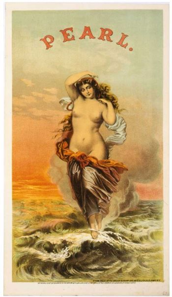
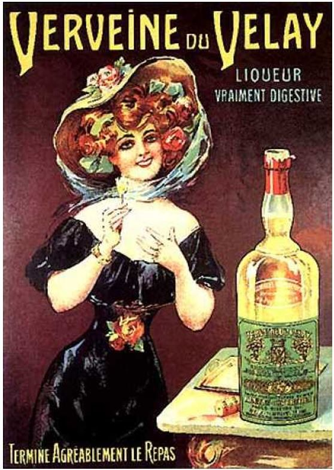

Introducción
Las grandes industrias en nuestra sociedad
han venido ganando terreno día tras día. Su
éxito aparentemente es un negocio muy
competitivo que parece no tener fin y busca
proporcionar las mayores satisfacciones a sus
clientes. Existen diferentes maneras en las que
ellas actúan en un mercado dinámico y que en
nuestros días es muy variable, usando técnicas
específicas para poder llegar a la población a la
que son destinados sus productos. (Peruzzolo,
2010)
Es bien sabido por todos que el sexo es un
negocio muy lucrativo. Es capaz de despertar
en la gente un interés innato que les incita a
querer ver y entender mejor su significado,
generando sentimientos y emociones
encontradas. (Sexualidad, 1994), y a pesar de
esto, un producto o servicio que es interpelado
por una imagen con contenido sexual puede
llegar a incitar a que el consumidor lo compre
una o varias veces, aunque según Paul Suggett,
redactor y director creativo, ‘‘si el producto
en cuestión no es lo suficientemente bueno,
el cliente no permanecerá mucho tiempo al
lado de la marca. No sólo eso, sino que se
sentirá defraudado y estafado por la marca. Y
cuando eso sucede, rara vez hay vuelta atrás
en la relación en la marca y cliente. ’’ (Suggett,
2011), ante esto la mercadotecnia se encarga
de envolver a los consumidores por algo que
ha sido un tabú a lo largo del tiempo, pero que
de igual manera ha sido algo muy llamativo
para el ser humano y es todo lo que rodea
al sexo y sus implicaciones, sabiendo esta
situación estas corporaciones estudian todo
lo referente a esto para empezar a mercadear
productos con este tipo de publicidad.
Esta relación ha sido estudiada en el tiempo,
donde antes se veía con una percepción
mucho más recatada pero que poco a poco
se ha venido liberando y puesto como
contextos normales apegados a los diferentes sistemas culturales, logrando así persuadir a
los clientes para las compras y consumos de
los diferentes productos, ante esto se puede
deducir la necesidad de la mente humana en
buscar satisfacer esta parte de alguna manera
y es aquí donde intervienen los especialistas
en marketing.
Ante esta situación enmarcada se planteó un
objetivo para la consecución de este proyecto
reflexivo como: analizar los contextos
documentados sobre los consumidores y
las estrategias de marketing basadas en la
sexualidad y su incidencia en las compras, esto
por medio de una metodología documental y
descriptiva.
Marketing y publicidad subliminal
Se entiende por publicidad subliminal a toda
aquella que contenga en su composición un
mensaje no detectable a simple vista que
incite al consumo o que guie al consumidor a
una determinada conducta.
Esta variante es muy utilizada en la actualidad
e intenta persuadir a la población con un
mensaje oculto que puede llegar a influir en
su decisión a la hora de comprar un producto.
Aunque existen varias maneras y varios tipos,
nos enfocaremos en la publicidad subliminal
que incluye contenido sexual oculto dentro
de su composición. (Jaime Rivera, Lucía Sutil,
2004)
Antes que nada es bueno conocer sobre la
historia de la publicidad subliminal. En 1957 un
experto publicitario de los Estados Unidos es
a quién se le atribuye la invención de este tipo
de publicidad, que juega con el subconsciente
humano. (Gómez, 2002)
Este individuo habría introducido uno o
dos fotogramas por minuto en los anuncios
audiovisuales de la Coca-Cola Company
(u otras marcas de la época) para influir subliminalmente en el público, empleando
un aparato llamado taquitoscopio. Aunque
eso pasaba por esos años, el auge previo al
estudio del psicoanálisis por parte de Sigmund
Freud fue el que catapulto e hizo más conocido
este concepto, y la gente puso entender
mejor a que se refería cuando hablaban de
esa terminología subliminal. (Manuel López
Castro, Rafael Moreno Díaz, 2008)
Ante este aspecto, la especialista en publicidad
subliminal María Estela Raffino, menciona
unas técnicas que se deben tener en cuenta,
menciona que pueden ayudar a influir en la
audiencia si se ejecutan correctamente:
- Imágenes ocultas: Se emplean líneas, siluetas
o contornos ocultos en un anuncio publicitario
para evocar en el espectador una reacción
que nada tiene que ver con el producto
ofrecido, pero que queda asociada a él
inconscientemente.
- Ambientaciones subliminales.: Se
trata de condiciones contextuales y de
acompañamiento del producto que son
aparentemente inocentes o casuales, pero que
sirven para inducir al espectador hacia ciertas
sensaciones o emociones que quedarían
vinculadas al producto.
- Emisiones en alta frecuencia: Consiste en la
emisión de imágenes o palabras incitando
al consumo o a una determinada sensación,
en un cuadro en medio de una publicidad
audiovisual o sonora, que no se capta
conscientemente pero se fija en la mente
subconsciente. (Raffino, 2018)
Además de esto, Raffina nos muestra algunos
ejemplos de publicidad subliminal, en los que
hace mención a los resultados obtenidos por
algunas empresas en concreto: Existen algunos
ejemplos históricos de casos en que se acusó a
una empresa de emplear en sus publicidades
mensajes ocultos que apelaban a los impulsos sexuales primarios, como fue el anuncio de
Vetiver de la marca Puig, en el que una modelo
sacaba un brazo de una piscina y lo apoyaba
en el suelo, justo en la sombra de un modelo y
en la región de su entrepierna.
Lo mismo se afirmó de la botella de Coca-Cola,
cuyas curvas imitarían inconscientemente al
cuerpo de una mujer, pero los directivos de la
empresa afirmaron que su inspiración original
había sido una semilla de cacao. También se ha
dicho que los colores de las grandes cadenas
de comida rápida cumplen una función
subliminal, que es la de generar en el cliente
lo contrario a la hospitalidad: la sensación de
que debe comer rápido e irse. Esto lo logra a
base de tonos intensos y vibrantes, agresivos,
en todo lugar. (Raffino, 2018)
La publicidad subliminal se puede implementar
de diferentes maneras y estilos con el fin de
obtener atención por parte de los receptores,
además de ello, en ocasiones es común que
las personas se refieran a la publicidad sexual
como subliminal, aunque en otros casos, se
aprecia la publicidad sexual que no tiene nada
que ver con la subliminal. (Rodríguez, 2003)
Figura 1.Ejemplo de publicidad sexual
Esta tendencia de el marketing apegado a
tendencias sexuales abarcaran diferentes
subdivisiones o subtemas: El inicio, su evolución, el sexo en el marketing, el sexo
en el marketing social, sexo en la publicidad,
variantes y marketing y publicidad subliminal.
Con más de un centenar de años de
ejecución, se ha convertido en un negocio
muy capacitado o experto en ganarse la
confianza de la gente sacando provecho de
eso pero aun así consiguiendo beneficios
para ambas partes.
Para entender mejor este contexto se
debe analizar los inicios del sexo junto a la
publicidad. Nos remontamos hasta mediados
del siglo XIX cuando se empezaron a realizar
las primeras piezas gráficas grabadas
en madera e ilustraciones en las que se
incluía las siluetas de mujeres atractivas
promocionando algo en concreto. Se tiene
constancia de que el primer uso conocido
de sexo con publicidad fue realizado por
la marca de tabaco Pearl en 1871, (Admin.,
Wordpress, 2012) la cual consistía en una
pieza gráfica que incluía el cuerpo desnudo
de una bella mujer posando de manera
provocativa mientras se le veía sosteniendo
una caja de cigarros.

Figura 2.Anuncio de Pearl Tobacco de 1871, considerado pionero en
incluir el sexo en la publicidad.
La Evolución
Con el correr de los años, el marketing ha
procurado desarrollar nuevos métodos que le
permitan captar la atención de las personas,
para ello ha analizado el comportamiento y
las diferentes características de la población
a través de los años con el fin de persuadir
su atención.
Ante este aspecto, el sexo y el erotismo no
son la excepción. Según lo indican algunos
estudios, el sexo es capaz de atraer de una
manera más o menos solapada, (Tovar, 2011)
por lo que no es descabellado pensar que no
se pueda usar en la publicidad, de hecho, ese
ha sido el gancho durante todos estos años.
Usualmente cuando vemos material de
este tipo, se puede notar una afinidad que
se tiene como predominancia el machismo
(hombres imponentes contra mujeres
débiles) generando todo tipo de reacciones
en estos años. (Torre, 1997) ¡Qué gran parte
del mercado se estaban perdiendo los
anunciantes! Fuera este tipo de comentarios
en relación a la moralidad o no del uso del
sexo como atractivo publicitario, al estudiar
la evolución vemos que no es hasta épocas
bastante modernas que la misma no tiene
como objeto a las mujeres. (Tovar, 2011)
Para entender más a fondo este tema,
se pudo analizar diferentes publicidades
realizadas desde el inicio del erotismo en el
marketing hasta nuestros días, viendo como
estas se adaptaron a las exigencias de nuestra
generación, de esta forma, observando
como la sexualidad puede generar un gran
rendimiento comercial en las diferentes
industrias a la que va destinada.

Figura 3.Anuncio de la primera década del siglo XX. Cartel que une lujuria
y alcohol
Como se aprecia en la figura 2, podemos
ver a una bella mujer impresionada por una
botella de alcohol, nótese la vestimenta de
la mujer, propias de aquel siglo. 1900 fue
una época de gran expansión en el ámbito
de la publicidad, y la entrada de las nuevas
empresas que terminarían siendo las reinas
durante las décadas siguientes en este
ámbito, explotando al máximo la publicidad y
consolidándose como una marca importante.
Un ejemplo claro es Coca-Cola, que en sus
inicios utilizó fotos de mujeres ejerciendo
diferentes labores mientras bebían el
refresco, o también las diferentes empresas
fabricantes de cervezas o cigarrillos que
incluían a bellas mujeres en sus publicaciones
con poses provocativas con el fin de captar
más rápido la atención.
Figura 4. Anuncio de Dolce&Gabbana dedicado a las mujeres
Durante la década de 2000 se van puliendo
todavía más las técnicas. Se logra transmitir
más lujuria y espíritu sexual mostrando
menos. En el caso de la figura 3, se aprecia
la seducción del hombre hacia la mujer, con
menos ropa que las de 1900. (Carolina SerranoBarquín, Patricia Zarza-Delgado, 2013), esta
evolución ha generado una avalancha de
diseños de marketing donde cada vez más
elevan el nivel de las exposiciones en las
gráficas, siendo modelos que tratan de llevar
un estilo a toda una comunidad y puede
influir positiva como negativamente hacia
la cultura de la sociedad, sin embargo se ha
demostrado con el tiempo la importancia
de estos aspectos en los consumidores y las
empresas que lo usan y como ejemplo es la
continuidad que se le sigue dando a este tipo
de publicidad, de lo contrario no se seguiría
haciendo.
El sexo en el marketing social
Varios especialistas en el mundo en marketing
social utilizan información sexual en varios
anuncios públicos o en cualquier material que
deseen implementar. Su principal motivo es
que contribuye a una mejor persuasión por
parte de los consumidores que de información que no contenga contenido sexual. Según
los investigadores Tom Reichert, Susan
Heckler y Sally Jackson, El hallazgo principal
fue que las apelaciones sexuales fueron más
persuasivas en general que las apelaciones
no sexuales combinadas para temas de
mercadeo social. Las apelaciones sexuales
también estimularon pensamientos más
favorables relacionados con la ejecución de
anuncios, pero tuvieron un efecto negativo
en la elaboración cognitiva (por ejemplo,
apoyo y argumentos en contra). (Tom
Reichert ,Susan E. Heckler y Sally Jackson,
2013) Los encuestados también informaron
que las apelaciones sexuales eran más
llamativas, agradables, dinámicas, y algo
más aptos para aumentar su interés en el
tema que las apelaciones no sexuales. Estos
hallazgos sugieren que la persuasión es en
gran parte el resultado del procesamiento
periférico y la distracción de mensajes algo
desagradables cuando se espera que los
receptores contrarresten el mensaje o sean
resistentes al cambio. (Tom Reichert ,Susan
E. Heckler y Sally Jackson, 2013)
Por otra parte, este estudio comprobó
que las apelaciones sexuales contribuyen
de mejor manera y pueden afectar la
persuasión cognitiva de las personas en
cuanto a los temas propuestos a través del
marketing social de ‘‘autoayuda’’, (Illouz,
2014) y también logra ir más allá de todos
los planteamientos tradicionales que un
solo mensaje puede ofrecer al probar pares
de apelaciones sexuales y no sexuales en
diferentes temas del mercado social. (Joan
Carles March, Francisco García, Mariano
Hernán , 2005)
Sexo en la publicidad
Como es bien sabido, el sexo y el erotismo
parecen encajar e ir de la mano con la
publicidad, básicamente porque este ayuda
a que la población capte con mayor atención
(y asombro) el contenido que se pretende mostrar. Con el avance de la tecnología y
las técnicas en la industria publicitaria, en
la actualidad se pueden realizar todo tipo
de formas y planteamientos publicitarios
que le permitan a los emisores enviar un
mensaje adecuado y acorde con lo que se
quiere promocionar, por lo general, piezas
que resalten en una sociedad multicultural
y polivalente. (Fernando Carrazedo, Flávio
Mário de Alcântara, 2002)
Existen infinidad de propuestas publicitarias
en el mundo, muchas de ellas son tan
deslumbrantes que les es fácil recordarlas por
el público, como otras que no lo son tanto.
En el tema del sexo, siempre se procura “no
mostrar mucho” puesto que le podría acarrear
problemas a la firma. (Claudia Gómez R.
Jorge Eduardo Mejía, 2012), sin embargo la
continuidad que se le sigue haciendo a este
tipo de publicidad va en aumento.
El erotismo por su parte, intenta por lo
general hacer énfasis en la combinación
entre glamour y una buena estética visual
principalmente sobre el cuerpo de la mujer.
También, y más en nuestra generación, se
viene intensificando el uso de modelos
masculinos semidesnudos con la intención de
despertar el interés femenino. Evidentemente
el uso del sexo y el erotismo en la publicidad
es justificado amparándose en la compleja
estructura del cerebro humano, y las distintas
motivaciones, en especial las que están
relacionadas con los deseos sexuales. El
Marketing erótico mantiene unos principios
que de forma general, pocas veces son
sobrepasados.
Según el portal web Puromarketing: ‘‘El
uso del sexo y el erotismo en la publicidad
es justificado amparándose en la compleja
estructura del cerebro humano, y las distintas
motivaciones, en especial las que están
relacionadas con los deseos sexuales. El
Marketing erótico mantiene unos principios
que de forma general, pocas veces son
sobrepasados. Se mantiene una ética moral
que se asocia a la sensualidad. A veces estas
limitaciones soportadas por la opinión general
y social llegan a extremos de riesgo. En
ocasiones, algunas empresas han desarrollado
campañas basadas en este factor erótico
originando como resultado, “polémicas” o
críticas que han conllevado a la censura de
sus propios anuncios. ’’ (Puromarketing.com,
2007)
Discisión
Por otra parte, una modalidad tal vez poco
conocida es el sexo telefónico. El sexo telefónico
es un tipo de sexo virtual en el que dos o
más individuos conversan a través del móvil
sobre temas eróticos. Olivia Wilde, especialista
en el tema, indica qué: ‘‘el sexo telefónico
no se trata solo de hablar. A medida que la
conversación se pone caliente, naturalmente
pasarás a la acción. La idea es que le cuentes a
tu pareja tu grado de excitación, qué parte de
tu cuerpo estás estimulando y de qué forma
lo estás haciendo. Y recuerda de nuevo lo de
ser detallista, no me voy a cansar de decirlo. ’’
(Wilde, 2018)
Esta variante de sexo también ha sido usada
por el marketing. (Felipe Estevez, Sofía, 2015)
Internet claramente ha sido la principal
herramienta para fomentar este tipo de
industria en nuestros tiempos, es una de
las formas más importantes que existen de
marketing con respecto al sexo telefónico, en
este sentido no existe nada de lo que haya
que preocuparse realmente, más que por
satisfacer a las millones de personas que usan
esta clase de satisfacción sexual. El marketing
con respecto al sexo telefónico no es algo
que se pueda apreciar libremente a través de
medios de comunicación como lo son la radio,
la televisión o los carteles. (Gregori, 2011)
Asimismo, la aparición de la internet fue un
fenómeno mundial que reconstruyo todos los
formatos establecidos y uno de ellos fue el servicio telefónico y las empresas dedicadas
a este negocio del sexo telefónico fueron
afectadas por cuanto esta nueva plataforma
brindaba nuevas herramientas visuales
que la telefonía no podía brindar, (Admin.,
icnfnt.com, 2017) aunque aclara que con la
evolución de los dispositivos digitales, esta
variante del marketing dio un paso hacia
adelante proporcionándole a sus clientes una
experiencia más privada y placentera.
Conclusiones
Desarrollar e implementar piezas publicitarias
con contenido sexual ayudaran a que estas
tengan una mejor captación por parte
del público, lo cual causaría un interés
mayor por entender. Y aunque el sexo y el
erotismo ayudan en este tema, si se usan
tan explícitamente es muy probable que sea
visto con malos ojos y acarree problemas
a la compañía. En resumen el sexo como
estrategia de marketing: si vende, y mucho
más si se aprovecha correctamente.
Este tema aunque sigue siendo tabú en algunos
sectores no se niega la importancia que ha
tenido parta las grandes corporaciones y el
posicionamiento que han podido conseguir
con esta estrategia, llegando cada vez más
a sectores tradicionales por medio de la
sublimación, es por ello que respondiendo al
objetivo de investigación sobre la incidencia
del sexo hacia los clientes se puede deducir
que si ha tenido un impacto y que si tienen
influencias este tipo de publicidad a la hora
de realizar compras, y que es por ello el
aumento que han tenido a través del tiempo
y como muestra de eso es que las compañías
lo siguen practicando y mejorando cada vez
más, sin embargo esta práctica a pasado de
nivel ya que actualmente se trata de no ser
tan impactante con las imágenes sino que se
disimulan para que el subconsciente adopte
la idea sin caer en alguna percepción fuera
de lo tradicional.
Referencias
- Admin. (25 de 4 de 2012). Wordpress. Obtenido
de Sexyadvertising: https://sexyadvertising.wordpress.com/2011/04/16/66/
- Admin. (2017). icnfnt.com. Obtenido de icnfnt.com:
https://icnfnt.com/marketing-sexo-telefonico/
- Carolina Serrano-Barquín, Patricia ZarzaDelgado. (2 de 8 de 2013). redalyc.org.
Obtenido de redalyc.org: https://www.redalyc.org/pdf/461/46128387006.pdf
- Claudia Gómez R. Jorge Eduardo Mejía.
(2012). universidadean.edu.co. Obtenido
de universidadean.edu.co: https://journal.universidadean.edu.co/index.php/Revista/article/view/592
- Felipe Estevez, Sofía. (2015). Marketing e impacto
social de la literatura erótica. Obtenido de
Universidad de Valladolid: http://uvadoc.uva.es/handle/10324/13136
- Fernando Carrazedo, Flávio Mário de Alcântara.
(5 de 9 de 2002). intercom.org.br. Obtenido de
intercom.org.br: http://www.portcom.intercom.org.br/pdfs/98274719883337482119000652063951775812.pdf
- Gómez, D. R. (2002). unal.edu.co. Obtenido de
unal.edu.co: http://www.bdigital.unal.edu.co/53804/1/darioruizgomez.2002.pdf
- Gregori, M. F. (10 de 10 de 2011). scielo.br. Obtenido
de scielo.br: http://www.scielo.br/pdf/cpa/n38/n38a03
- Illouz, E. (2014). Erotismo de autoayuda. Obtenido de
Google Académico: https://books.google.es/J&oi=fnd&pg=PA7&
- Jaime Rivera, Lucía Sutil. (9 de 11 de 2004).
Marketing y publicidad subliminal. Obtenido
de Marketing y publicidad subliminal: https://books.google.es/s?hl=es&lr=&
- Joan Carles March, Francisco García, Mariano
Hernán . (1 de 2005). researchgate.net.
Obtenido de researchgate.net: https://www.researchgate.net/profile/Francisco_Garcia_Espana/publication/
- Manuel López Castro, Rafael Moreno Díaz.
(2008). unirioja.es. Obtenido de unirioja.
es: https://dialnet.unirioja.es/servlet/articulo?codigo=5605462
- Peruzzolo, A. C. (7 de 10 de 2010). revistacmc.espm.
br. Obtenido de revistacmc.espm.br: http://revistacmc.espm.br/index.php/revistacmc/article/view/287/262
- Puromarketing.com. (21 de 12 de 2007).
puromarketing.com. Obtenido de
puromarketing.com: https://www.puromarketing.com/9/4020/atraccionmarketing-erotico-sexo-publicidad.html
- Raffino, M. E. (23 de 11 de 2018). concepto.de.
Obtenido de concepto.de: https://concepto.de/publicidad-subliminal/
- Rodríguez, R. (2003). Erotismo. Obtenido de
Doogle Académico: https://books.google.es/s?hl=es&lr=&
- Sexualidad, R. b. (12 de 1994). educacional.
com.br. Obtenido de educacional.com.
br: http://pessoal.educacional.com.br/up/4660001/9842654/Revista%20Brasileira%20de%20Sexualidade%20Humana%20-%20volume%205.pdf#page=29
- Suggett, P. (4 de 10 de 2011). marketingdirecto.
com. Obtenido de About.com: https://www.marketingdirecto.com/marketing-general/publicidad/%C2%BFvende-realmente-elsexo-en-la-publicidad
- Tom Reichert ,Susan E. Heckler y Sally Jackson.
(31 de 5 de 2013). tandfonline.com. Obtenido
de tandfonline.com: https://www.tandfonline.com/doi/abs/10.1080/00913367.2001.10673628
- Torre, A. d. (5 de 3 de 1997). Chasqui. Obtenido
de Chasqui: https://revistachasqui.org/index.php/chasqui/article/view/1106/1135
- Tovar, R. (13 de 11 de 2011). agentyc.com.
Obtenido de agentyc.com: https://agentyc.com/sexo-erotismo-marketing-evolucionanuncios-revistas/
- Wilde, O. (2018). vix.com. Obtenido de vix.com:
https://www.vix.com/es/imj/6058/tips-paratener-sexo-telefonico